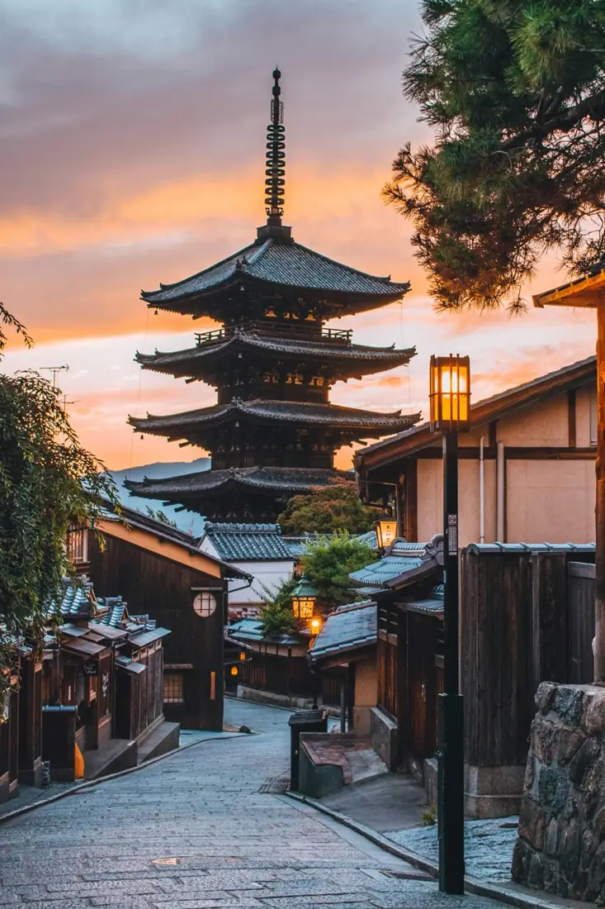
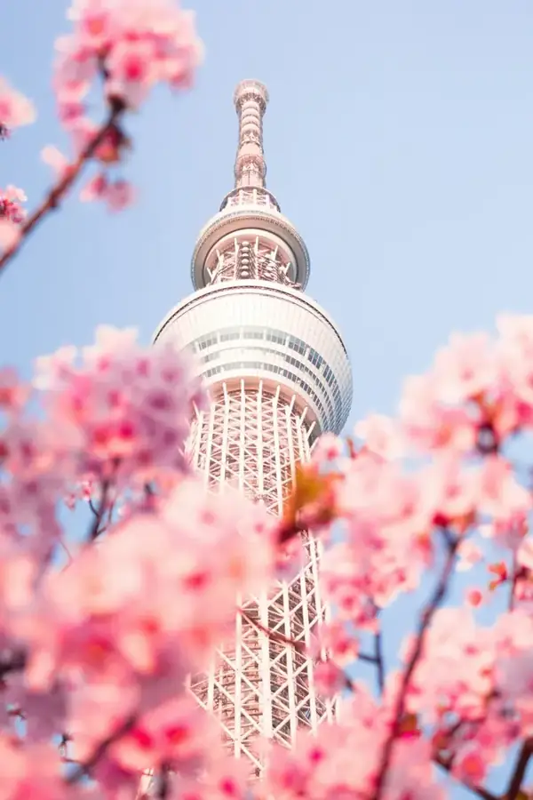
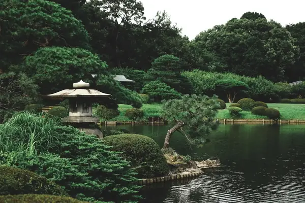
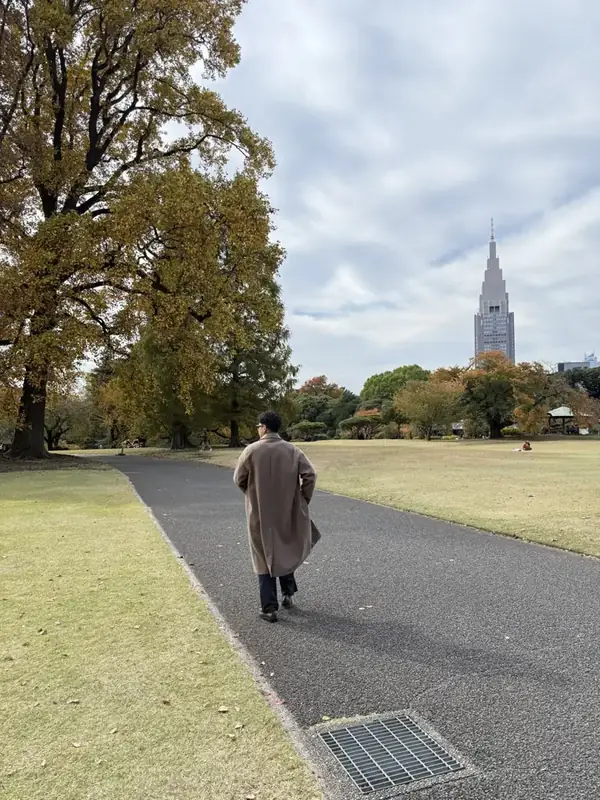
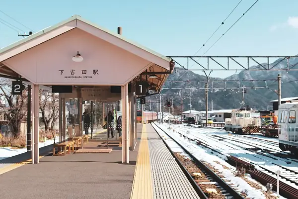

Musim Panas
Musim PanasHokkaido hingga Kansai
Sapporo · Furano · Tokyo · Kyoto · Nara · Osaka
Harga disesuaikan dengan itineraryLihat detail

Setiap itinerary dikurasi dari pengalaman langsung menjelajahi Jepang, kemudian disesuaikan dengan ritme, minat, dan kenyamanan rombongan Anda.

Bukan sekadar tur, melainkan cara menikmati Jepang yang tenang, autentik, dan sepenuhnya personal.
Japanscape menghadirkan perjalanan privat ke Jepang, dirancang khusus untuk wisatawan Indonesia. Setiap destinasi dikurasi langsung dari pengalaman Zefanya Adriel, founder kami, menjelajahi Jepang — dari tempat-tempat ikonik hingga sudut yang jarang dikunjungi.
Tidak ada paket jadi. Setiap perjalanan dimulai dari Anda — tanggal, minat, dan cara Anda ingin menikmati Jepang.
Dua contoh dari perjalanan klien sebelumnya, sebagai gambaran dan bukan paket. Rute perjalanan Anda akan disusun secara khusus.
Musim Panas Musim Dingin
Musim DinginItinerary di atas berasal dari perjalanan klien kami dan ditampilkan tanpa nama klien.
Kami menyesuaikan rute dengan musim kedatangan Anda, agar setiap hari dinikmati pada waktu terbaiknya.

Sakura di sepanjang kanal dan taman kuil.

Pegunungan yang hijau dan ladang bunga Hokkaido.

Cuaca yang nyaman, langit cerah, alam yang paling indah, dan wisatawan yang tidak terlalu ramai.

Salju, pegunungan putih, dan kota yang berkilau.
*Syarat & ketentuan berlaku

Saya sering bertemu wisatawan yang tersesat di stasiun. Dari sanalah Japanscape lahir — bukan sekadar pemandu, melainkan pendamping perjalanan yang membantu Anda sejenak lepas dari rutinitas di Jepang.

Kirimkan rencana tanggal, jumlah peserta, dan minat perjalanan Anda. Kami akan kembali dengan rancangan itinerary pertama.